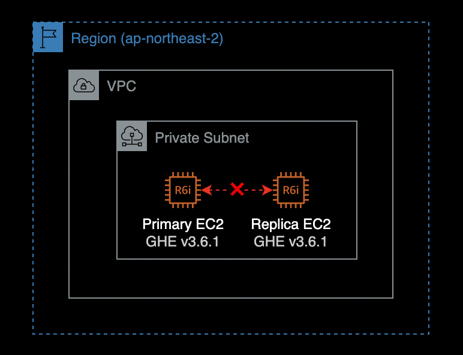
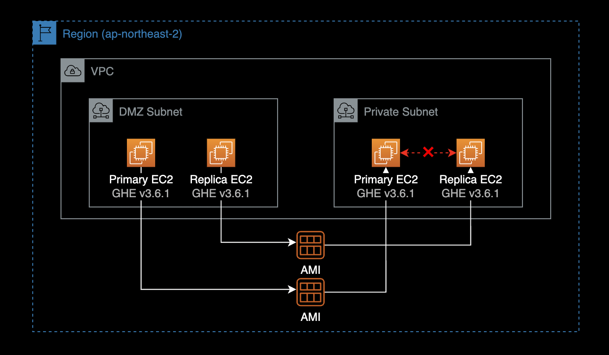
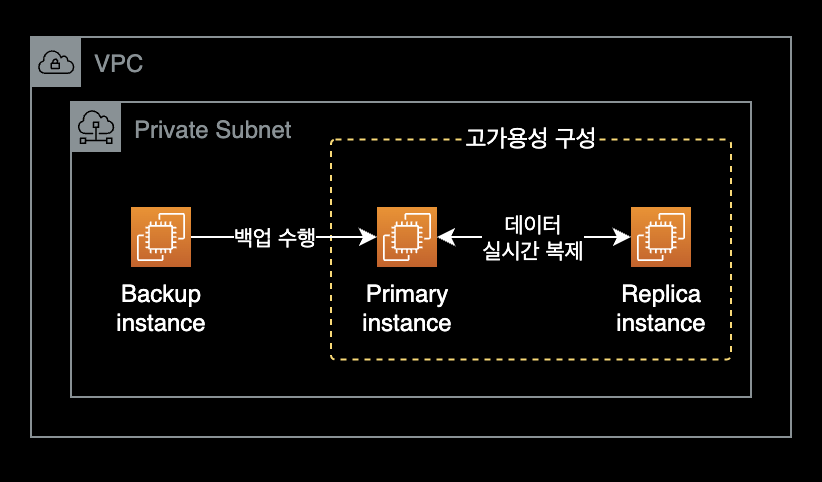

Github Enterprise MSSQL replication 오류
개요
Github Enterprise Server를 사용하던 중 MSSQL 컴포넌트의 이중화Replication 실패 문제가 발생했습니다.
GHE 운영 중 발생한 MSSQL 복제 실패 문제를 해결한 기록입니다.
환경
2대의 EC2 인스턴스로 Github Enterprise를 이중화 구성 했습니다.

- 인프라 구성 : Amazon EC2 x 2대를 사용하여 서버 이중화 구성
- 인스턴스 타입 : r6i.2xlarge
- Primary와 Replica의 인스턴스 타입은 동일합니다.
- OS : Debian 10
- 인스턴스 타입 : r6i.2xlarge
- GHE Version : Github Enterprise Server v3.6.1
발단
기존에 Primary - Replica 구조로 2대의 Github Enterprise Server를 운영중이었습니다.
그러나 금융 컴플라이언스 규제를 준수하기 위해, 기존에 잘 돌아가던 GHE 서버를 이사해야 하는 일이 발생했습니다.
서버를 중지하고, AMI를 생성한 다음, 그 AMI를 활용해 다른 서브넷에 새로 GHE EC2를 생성하여 옮긴 후에 MSSQL 이중화 문제가 발생했습니다.

Github Enterprise 서버 2대를 다른 서브넷으로 이동시키기 전에는 모든 컴포넌트의 이중화Replication가 문제 없이 동작했었습니다.
아래는 다른 서브넷으로 인스턴스를 옮긴 후 Replica 서버에서 확인한 Github Enterprise 이중화 상태입니다.
# On replica instance.
$ ghe-repl-status
OK: mysql replication is in sync
CRITICAL: Synchronization delay could not be determined: Msg8169,Level16,State2,Serveryour-ghedomain-com-primary,Line19Conversionfailedwhenconvertingfromacharacterstringtouniqueidentifier.
OK: redis replication is in sync
OK: elasticsearch cluster is in sync (0 shards initializing, 0 shards unassigned)
OK: git replication is in sync
OK: pages replication is in sync
OK: alambic replication is in sync
OK: git-hooks replication is in sync
OK: consul replication is in sync
현재 MSSQL 관련하여 CRITICAL 알람이 들어와 있는 걸 확인할 수 있습니다.
이중화 상태를 더 상세하게 확인한 결과입니다.
# On replica instance.
$ ghe-repl-status -v
OK: mysql replication is in sync
| IO running: Yes, SQL running: Yes, Delay: 0
CRITICAL: Synchronization delay could not be determined: Msg8169,Level16,State2,Serveryour-ghedomain-com-primary,Line19Conversionfailedwhenconvertingfromacharacterstringtouniqueidentifier.
| Token_Configuration State: SYNCHRONIZING, Health: HEALTHY, Delay: 0ms, Replica ID: 89C7EA2B-4F66-4764-8EDF-93D4456E50E8, Database ID: 12
| Pipelines_Configuration State: SYNCHRONIZING, Health: HEALTHY, Delay: 0ms, Replica ID: 89C7EA2B-4F66-4764-8EDF-93D4456E50E8, Database ID: 11
| CRITICAL: Synchronization delay could not be determined: Msg8169,Level16,State2,Serveryour-ghedomain-com-primary,Line19Conversionfailedwhenconvertingfromacharacterstringtouniqueidentifier.
OK: redis replication is in sync
| master_host:your-ghedomain-com-primary
| master_port:6379
| master_link_status:up
| master_last_io_seconds_ago:0
| master_sync_in_progress:0
| master_replid:cdcfe93471d9efc7c38e6e81b9708e22c3fd1e9c
| master_replid2:0000000000000000000000000000000000000000
| master_repl_offset:2799127571
OK: elasticsearch cluster is in sync (0 shards initializing, 0 shards unassigned)
| {
| "cluster_name" : "github-enterprise",
| "status" : "green",
| "timed_out" : false,
| "number_of_nodes" : 2,
| "number_of_data_nodes" : 2,
| "active_primary_shards" : 53,
| "active_shards" : 106,
| "relocating_shards" : 0,
| "initializing_shards" : 0,
| "unassigned_shards" : 0,
| "delayed_unassigned_shards" : 0,
| "number_of_pending_tasks" : 0,
| "number_of_in_flight_fetch" : 0,
| "task_max_waiting_in_queue_millis" : 0,
| "active_shards_percent_as_number" : 100.0
| }
OK: git replication is in sync
| Git replication is in sync
OK: pages replication is in sync
| Pages replication is in sync
OK: alambic replication is in sync
| Alambic replication is in sync
OK: git-hooks replication is in sync
| git-hooks replication is in sync
OK: consul replication is in sync
| Active: active (running) since Fri 2022-11-25 15:35:21 UTC; 1 weeks 2 days ago
Primary 인스턴스와 Replica 인스턴스에서 아래 명령어를 실행해 MSSQL의 데이터베이스 크기를 확인할 수 있습니다.
sudo du -h --time /data/user/mssql/data
실제 Primary, Replica 인스턴스에서 MSSQL DB 크기를 확인한 결과입니다.
# On primary instance.
$ sudo du -h --time /data/user/mssql/data
40G 2022-12-18 11:58 /data/user/mssql/data
# On replica instance.
$ sudo du -h --time /data/user/mssql/data
34G 2022-12-18 11:58 /data/user/mssql/data
- Primary 인스턴스 데이터베이스 크기 : 40GB
- Replica 인스턴스의 데이터베이스 크기 : 34GB
해결방안
결과적으로 Github Support 팀이 알려준 해결방안을 적용해서 문제를 해결했습니다.
-
MSSQL의 복제를 중지합니다.
Primary 서버에서 실행 -
트랜잭션 로그의 크기를 줄이기 위해 MSSQL 데이터베이스를 백업합니다.
이 과정에서는 MSSQL 데이터베이스가 잠시 중단되므로 미리 공지를 한 후 작업하도록 합니다.
Primary 서버에서 실행 -
MSSQL 복제를 다시 시작합니다.
Primary 서버에서 실행
상세 조치방법
중요
반드시 Primary 서버에 SSH 또는 SSM Session Manager로 접속한 후 아래의 모든 명령을 실행합니다.
MSSQL 이중화 중지
먼저 MSSQL 복제를 중지합니다.
# On primary instance.
ghe-cluster-each --replica '/usr/local/share/enterprise/ghe-repl-stop-mssql'
복제를 중지한 다음에는 복제 가용성 그룹을 삭제해 보겠습니다.
# On primary instance.
ghe-mssql-console -y -n -q "DROP AVAILABILITY GROUP ha"
MSSQL 백업
위 두 명령을 수행한 후에는 MSSQL 백업을 실행하여 트랜잭션 로그를 잘라야 합니다.
GitHub 엔터프라이즈 서버 백업 유틸리티를 사용하여 전체 백업을 수행하거나 다음 명령을 사용하여 MSSQL의 로컬 백업만 수행하여 이 작업을 수행할 수 있습니다.
# On primary instance.
ghe-export-mssql
ghe-export-mssql 명령어가 정상적으로 실행되면 터미널에 다음과 같은 결과가 출력됩니다.
Removing old backup files
Backing up the following databases:
ArtifactCache_Configuration
ArtifactCache_1359a2c4-19f5-45ec-9528-9878b787a9d4
Pipelines_Configuration
Pipelines_c99f0578-ad92-47d9-a6d9-3dd3784c8ec8
Mps_Configuration
Mps_968bc9d8-9588-401d-ab3f-a2cf3136580e
Token_Configuration
Token_1d234f5b-c111-111d-1111-11b11111f111
...
Processed 28968 pages for database 'Token_1d234f5b-c111-111d-1111-11b11111f111', file 'Token_1d234f5b-c111-111d-1111-11b11111f111_log' on file 1.
BACKUP LOG successfully processed 28968 pages in 3.310 seconds (68.371 MB/sec).
로그 축소
백업을 수행한 후 다음 명령을 실행하여 트랜잭션 로그를 축소합니다.
# On primary instance.
/usr/local/share/enterprise/ghe-mssql-shrinkfile
위의 모든 명령이 실행되면 다음 명령을 실행하여 MSSQL 복제Replication를 다시 시작합니다.
# On primary instance.
. /usr/local/share/enterprise/ghe-mssql-lib
set +e
restart-mssql-global
ghe-cluster-each --replica '/usr/local/share/enterprise/ghe-repl-start-mssql'
ghe-cluster-each --replica 'ghe-repl-status'
ghe-mssql-health-check -y
이중화 상태 확인
Primary 서버에서 ghe-repl-status를 통해 이중화 상태를 확인합니다.
# On primary instance.
$ ghe-cluster-each --replica 'ghe-repl-status'
gh-greenlabsfin-com-replica: OK: mysql replication is in sync
gh-greenlabsfin-com-replica: OK: mssql replication is in sync
gh-greenlabsfin-com-replica: OK: redis replication is in sync
gh-greenlabsfin-com-replica: OK: elasticsearch cluster is in sync (0 shards initializing, 0 shards unassigned)
gh-greenlabsfin-com-replica: OK: git replication is in sync
gh-greenlabsfin-com-replica: OK: pages replication is in sync
gh-greenlabsfin-com-replica: OK: alambic replication is in sync
gh-greenlabsfin-com-replica: OK: git-hooks replication is in sync
gh-greenlabsfin-com-replica: OK: consul replication is in sync
MSSQL 복제가 정상적으로 동기화in sync중인 것을 확인할 수 있습니다.
Replica 서버에서도 이중화 상태를 확인합니다.
# On replica instance.
$ ghe-repl-status
OK: mysql replication is in sync
OK: mssql replication is in sync
OK: redis replication is in sync
OK: elasticsearch cluster is in sync (0 shards initializing, 0 shards unassigned)
OK: git replication is in sync
OK: pages replication is in sync
OK: alambic replication is in sync
OK: git-hooks replication is in sync
OK: consul replication is in sync
MSSQL 복제가 정상적으로 동기화중임을 확인할 수 있습니다.
개선방법
backup-utils 인스턴스
처음 문제가 발생한 시점에 mssql 데이터베이스는 여전히 주 데이터베이스에서 복제 중이었으며, 이를 위해서는 백업이 필요하므로 트랜잭션 로그가 잘리지 않기 때문에 데이터베이스가 필요한 것보다 훨씬 큰 게 문제였습니다.
이러한 MSSQL 복제 이슈를 방지하기 위해서는 별도 리눅스 서버를 만들고, 깃허브에서 공식 제공하는 backup-utils를 설치하고 주기적으로 하루에 한 번 스케줄 백업을 구성하는 게 확실한 해결 방안입니다.

Github에서는 공식적으로 Primary Replica를 이용한 HA 구성과 backup-utils를 같이 사용하는 것을 권장하고 있습니다.
backup-utils 공식문서
단, backup만을 수행하기 위한 Primary와 Replica 외에 EC2 인스턴스가 1대 더 필요합니다.
GitHub Enterprise Server 3.6.1용 backup-utils를 다운로드할 수 있습니다.
AWS Backup vs backup-utils
Github Enterprise에서는 공식적으로 메인 백업 시스템으로 AWS 관리형 백업 서비스인 AWS Backup 보다는 GitHub Enterprise Backup Utilities를 사용하는 걸 권장하고 있습니다.
이는 Github Enterprise에서 제공하는 backup-utils가 백업의 최대 무결성을 보장하기 때문입니다. AWS Backup을 사용하는 경우, 인스턴스가 종료되거나 유지보수 모드로 설정되지 않는 한 완전한 백업을 보장하지 못할 수 있습니다.
Github Enterprise 팀 권장사항으로는 크게 2가지가 백업 구성 방법이 있습니다.
2가지 선택지 중 자신의 시스템 환경에 맞게 구성하면 됩니다.
- Github Enterprise의 backup-utils(메인)만 사용
- backup-utils(메인) + AWS Backup(보조)
Backup-utils 관련자료
backup-utils requirements
GHE 백업 전용 서버의 필요조건